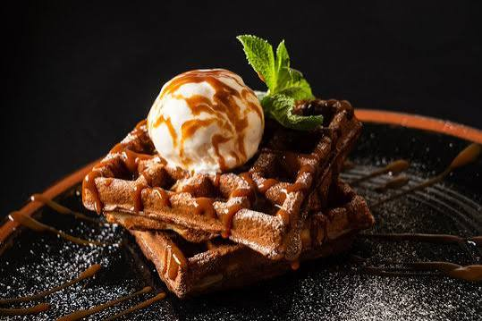
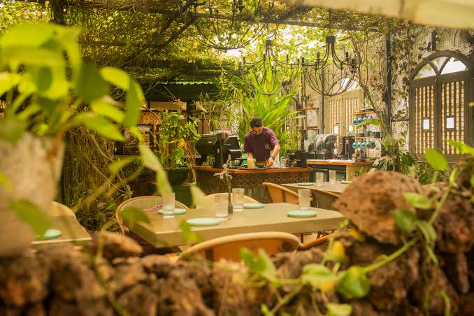

For the ones who go savoury.
Crisp edges, rich melted fillings, and perfectly balanced savory profiles.
Cave-Aged Cheeses & Meats
We source authentic Swiss Gruyère, sharp 2-year aged Canadian white cheddar, and Italian Prosciutto di Parma. Melted over hot buckwheat batter, they create a rich, savory emulsion with snipped garden chives and house béchamel.
Pan-Seared Forest Mushrooms
Hand-sliced cremini, oyster, and shiitake mushrooms sautéed in cold-pressed garlic oil with fresh thyme. Folded with tender organic baby spinach and creamy sheep milk feta for deep earthy satisfaction.
Cold-Smoked Atlantic Salmon
Sustainably harvested Atlantic salmon cured in sea salt and wood smoke. Layered over delicate dill crème fraîche, Mediterranean caper berries, and house-pickled shallots for bright, briny balance.
Naturally gluten-friendly and deeply nutty.
Originating from Brittany, France, the savory galette uses 100% dark buckwheat flour (sarrasin), cold spring water, and sea salt. It contains no wheat flour by nature.
When spooned onto a scorching griddle, the batter bubbles up into thousands of microscopic pockets called 'dentelles', yielding an irresistible lace-like crispiness that holds rich cheeses and savory fillings.
Reserve Table for Lunch
Fresh Sides to Complete Your Galette
Pair your savory crepe with garden greens or golden roasted breakfast potatoes.
Organic Market Greens ($6)
Tender arugula, baby gem lettuce, shaved radishes, and champagne shallot vinaigrette.
Crispy Herb Potatoes ($7)
Yukon Gold potatoes roasted with rosemary, sea salt, garlic butter, and smoked paprika aioli.
Pasture Egg Topper ($2.50)
Sunny-side or soft-poached local organic egg nested right in the heart of your galette.
Crisp sparkling ciders & rich coffee.
Traditionally in Brittany, savory galettes are enjoyed with sparkling fermented apple ciders poured into ceramic bowls. We offer artisanal sparkling ciders, craft ginger sodas, and unsweetened iced tea.
For mid-day meetings, pair your galette with a creamy Flat White or a cold-brew on tap for steady, focused energy without an afternoon slump.
View beverage menuHungry for something savory?
Join us anytime from 8:00 AM on weekdays or 9:00 AM on weekends. We cook all savory items fresh to order, all day long.
